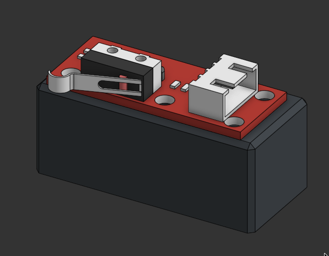
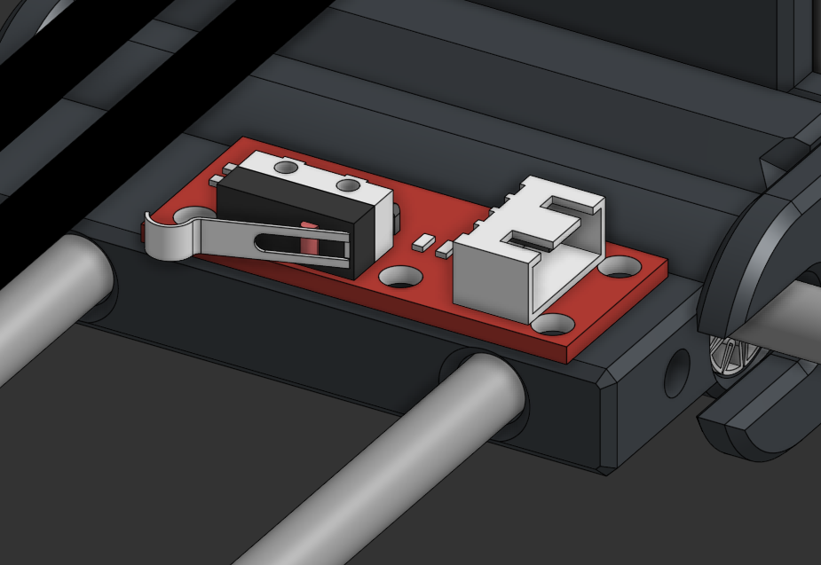

Capteurs de Fin de Course (Endstops)
Les capteurs de fin de course sont les "yeux" de la machine. Ils permettent à MachineThatDraws de se repérer dans l'espace et d'éviter les collisions mécaniques destructrices.


1. Mécanisme de Déclenchement
Le système utilise des micro-switchs à levier mécanique. Pour simplifier la conception et limiter le nombre de pièces mobiles :
- Contact direct : C'est la structure même du chariot (X ou Y) qui vient appuyer physiquement sur la languette métallique du capteur.
- Câblage NO (Normally Open) : Les capteurs sont câblés de manière à ce que "rien ne passe" en temps normal. Le circuit ne se ferme que lorsque le levier est activé.
2. Une Double Fonction : Homing et Sécurité
Chaque capteur remplit deux rôles cruciaux dans le firmware GRBL :
- Recherche de l'Origine (Homing) : Au démarrage, la machine se déplace lentement jusqu'à toucher les capteurs pour définir son 0,0.
- Limites Matérielles (Hard Limits) : En cours d'impression, si un capteur est touché par accident, la machine interprète cela comme une erreur critique et coupe instantanément les moteurs pour éviter tout dégât.
⚠️ Protection Mécanique (Offset de 5 mm) :
Pour éviter que la machine ne vienne écraser le capteur lors de sa recherche d'origine, nous avons configuré un décalage de sécurité de 5 mm. Une fois le contact établi, la machine recule de 5 mm. Le point 0 réel du dessin commence donc après cette zone tampon, préservant ainsi l'intégrité physique des switchs sur le long terme.
Pour éviter que la machine ne vienne écraser le capteur lors de sa recherche d'origine, nous avons configuré un décalage de sécurité de 5 mm. Une fois le contact établi, la machine recule de 5 mm. Le point 0 réel du dessin commence donc après cette zone tampon, préservant ainsi l'intégrité physique des switchs sur le long terme.
3. Positionnement Stratégique
Les capteurs sont répartis pour couvrir les deux axes principaux :
- Axe Y : Un capteur est placé sur le rail gauche pour stopper le portique.
- Axe X : Un capteur (Y0) est placé au niveau du chariot de la tête d'impression pour définir le départ latéral du tracé.